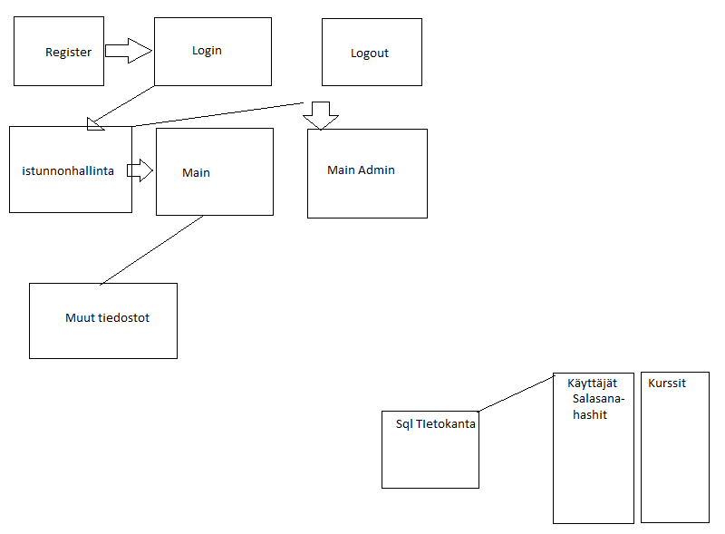

Harjoitustyö TTMS0900/TTMS0500
Alexander Andreev K8684 TTV16S3 Web-ohjelmointi/Web-palvelinohjelmointi
Harjoitustyön tavoitteena oli kurssilista sivuston toteuttaminen, jolla käyttäjä pystyisi nähdä kurssia, lisätä niitä, muokkaa, säilyttää lisätietoja xml tai json tiedostossa.
Käyttäjäkokemus alkaa tunnuksen luomisella. Käyttäjä syöttää käyttäjätunnuksen, salasanan, kutsumanimen ja sähköpostiosoitteen(vapaehtoisesti).
Tunnuksen luomiseen jälkeen, käyttäjä pystyy kirjautumaan sisään. Joko adminina, tai normikäyttäjänä.
Normikäyttäjänä käyttäjä voi lisätä kursseja, muokkaa niitä(jäi toteuttamatta) ja nähdä niitä.
Adminina edellisten toimeen lisäksi, käyttäjä voisi myös poistaa kursseja.
Tekninen puoli:
On olemassa SQL tietokanta, jossa on kaksi taulua käyttäjät ja taulut.
Käyttäjä taulussa säilytetään käyttäjätunnuksen ja password_hash funktion avulla hashatut salasanat. Kun käyttäjä yrittää kirjautua sisään, ohjelma tarkistaa onko se admin
(jonka tunnus ja salasana ovat kovakoodatut ohjelmakoodin), jos ei ohjelmaa tarkista onko käyttäjä olemassa ja jos on, tarkistaa hänen salasanaa password_verify avulla.
Toteuttamatta ovat jäänet :
Oman taulun luomiseen jokaiselle käyttäjälle
Mahdollisuus muokkaa kurssitietoja
Alkuperäinen suunnitelma, että jokainen toiminto haetaan sivulle ja toetuttaan ajaxin+jqueryn avulla
Mahdollisuus lataa ja muokkaa xml tiedostoja käyttöliittymän kautta.
Kaunis käyttöliittymä
Käyttöliittymässä käyttäjä näkee dropdown listalta kaikki kurssit ja niiden id, kursseja haetaan listaan dynamisesti ajaxin avulla.
Myös pääsivulta löytyy kurssilisäys lomake ja mahdollisuus reaaliaikana etsiä jotain merkintöjä notepadista, eli xml tiedosta.
Itsearviointi:
TTMS0900 – 1, TTMS0500 - 1 Suuri osa toiminnallisuudesta jäi toteuttamatta, edes ”helppoihin” ominaisuuksiin meni uskomattomasti paljon aikaa.
Käytetty aika : 60+ tuntia, jos lisätään suunnitteluaika 70+
Olin liian itsevarma harjoitustyön alkuvaiheessa. Ensiksi suunnitelmaan meni liikaa aikaa, kun aloitin tekemään olen laskenut ajan niin, että
”sisäänkirjautumiseen menee noin 4-5 tuntia aikaa, päätoiminnallisuuden noin 15-20 ja loppuaikaa jää hiomiseen.
Pelkkä sisäänkirjautumisen toteuttamiseen meni yli 25 tuntia , josta suurin osa meni syntyvien virheiden korjamiseen.
CREATE TABLE `harkka`.`userdb` (
`UserID` INT NOT NULL AUTO_INCREMENT,
`username` VARCHAR(45) NOT NULL,
`password` VARCHAR(255) NOT NULL,
`nickname` VARCHAR(45) NOT NULL,
`email` VARCHAR(45) NULL,
PRIMARY KEY (`UserID`),
UNIQUE INDEX `username_UNIQUE` (`username` ASC),
UNIQUE INDEX `nickname_UNIQUE` (`nickname` ASC));
CREATE TABLE `harkka`.`courselist` (
`courseId` INT NOT NULL AUTO_INCREMENT,
`courseName` VARCHAR(45) NULL,
`courseData` VARCHAR(45) NULL,
`courseStatus` VARCHAR(45) NULL,
`Grade` INT NULL,
`Additional` VARCHAR(255) NULL,
PRIMARY KEY (`courseId`));
